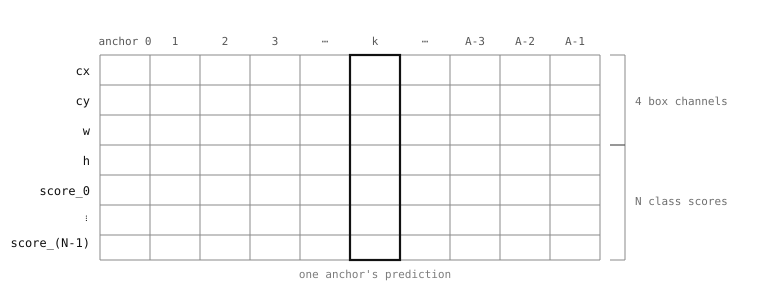

7.14. Parcurgerea pas cu pas a YOLOv8¶
Post-procesorul YOLOv8 este suficient de mic pentru a fi parcurs de la tensorul de intrare până la lista returnată. Citirea lui o singură dată arată ce face fiecare alt post-procesor din catalog: aplică pragul ieftin pe scorurile cuantizate, ia ce supraviețuiește, dezcuantizează, decodează geometria, transmite la NMS, returnează liste pe clase.
7.14.1. Tensorul de plecare¶
Un model YOLOv8 emite un singur tensor de ieșire a cărui formă este (1, C, A) – un cadru, C canale, A predicții de ancoră. Primele patru canale sunt geometria casetei – cx, cy, w, h – normalizate la [0, 1] din dimensiunile de intrare ale rețelei. Restul de C - 4 canale sunt scoruri pe clase, deja în [0, 1] pentru un model antrenat. Fiecare ancoră este o coloană de-a lungul canalelor.

O ancoră YOLOv8 este o coloană de-a lungul canalelor: patru numere de casetă și N scoruri de clasă.¶
Modelul livrat yolov8n_192.tflite este un detector de persoane cu o singură clasă, deci C = 5 și A este de ordinul miilor; un model personalizat antrenat pe setul complet COCO cu 80 de clase are C = 84 față de același A. Decodarea de mai jos este valabilă pentru orice număr de clase.
7.14.2. Aplicarea pragului înainte de dezcuantizare¶
Pasul ieftin mai întâi. Tensorul de ieșire este în tipul de date întreg cuantizat al modelului, iar dezcuantizarea fiecărei valori ar atinge fiecare element al unui tensor cu mii de intrări – dintre care majoritatea sunt sub pragul de scor și ajung descartate. Post-procesorul cuantizează în schimb pragul o singură dată și compară în spațiul cuantizat brut:
from ml.utils import quantize, threshold, dequantize, NMS
from ulab import numpy as np
oh, ow, oc = model.output_shape[0]
scale = model.output_scale[0]
t = quantize(model, self.threshold)
column_outputs = outputs[0].reshape((oh * ow, oc))
score_block = column_outputs[4:, :]
score_indices = threshold(score_block, t, scale,
find_max=True,
find_max_axis=0)
if not len(score_indices):
return ()
column_outputs este tensorul remodelat la (C, A) astfel încât canalele să fie rânduri, iar ancorele să fie coloane. score_block este sub-tensorul de scoruri de clasă – tot ce este de la rândul 4 în jos. ml.utils.threshold() reduce acel bloc de-a lungul axei 0 (find_max=True, find_max_axis=0) la scorul maxim per ancoră, apoi returnează indicii ancorelor al căror maxim trece de pragul cuantizat. Întregul tensor nu a fost niciodată dezcuantizat; doar o reducere de maxim pe coloană în spațiul întreg cuantizat.
Dacă nicio ancoră nu trece, post-procesorul returnează tuplul gol pe care predict() îl interpretează ca lipsă de detectare.
Două decizii din acest cod fac diferența între un post-procesor care poate rula și unul inutilizabil de lent. Prima este conducerea aritmeticii prin numpy: tensorul de ieșire are mii de elemente, iar iterarea lui în Python brut durează secunde întregi per inferență, în timp ce aceeași aritmetică vectorizată prin numpy rulează în milisecunde. A doua este dezcuantizarea după filtrul de prag, nu înainte. Dezcuantizarea în prealabil ar aloca un tensor în virgulă mobilă de patru ori mai mare decât cel cuantizat și ar parcurge fiecare element înainte de a le descarta pe aproape toate; dezcuantizarea doar a coloanelor supraviețuitoare atinge cel mult o mână de valori și economisește atât timpul, cât și memoria RAM pe care le-ar fi consumat conversia completă.
7.14.3. Dezcuantizarea supraviețuitorilor¶
Doar ancorele supraviețuitoare au nevoie ca geometria lor să fie decodată. numpy.take() extrage acele coloane, iar un singur apel ml.utils.dequantize() le convertește la valori în virgulă mobilă:
bb = dequantize(model,
np.take(column_outputs, score_indices, axis=1))
bb este acum (C, K) unde K este numărul de ancore supraviețuitoare – de obicei o mână, chiar și când A era de ordinul miilor.
7.14.4. Citirea geometriei¶
Cele patru canale de casetă și scorurile pe clase sunt extrase direct:
bb_scores = np.max(bb[4:, :], axis=0)
bb_classes = np.argmax(bb[4:, :], axis=0)
x_center = bb[0, :]
y_center = bb[1, :]
w_half = bb[2, :] * 0.5
h_half = bb[3, :] * 0.5
bb_scores este cel mai bun scor de clasă per ancoră supraviețuitoare; bb_classes este indicele de clasă care a furnizat acel scor. Geometria casetei este încă în [0, 1] normalizat din dimensiunile de intrare ale rețelei, așa că pasul următor o scalează la pixeli:
ib, ih, iw, ic = model.input_shape[0]
xmin = (x_center - w_half) * iw
ymin = (y_center - h_half) * ih
xmax = (x_center + w_half) * iw
ymax = (y_center + h_half) * ih
După aceasta, casetele sunt în spațiul de pixeli al intrării rețelei – spațiul de coordonate pe care NMS îl așteaptă la intrare.
7.14.5. Suprimarea non-maximelor¶
Supraviețuitorii trec prin NMS și sunt returnați ca liste pe clase:
nms = NMS(iw, ih, inputs[0].roi)
for i in range(bb.shape[1]):
nms.add_bounding_box(xmin[i], ymin[i],
xmax[i], ymax[i],
bb_scores[i], bb_classes[i])
return nms.get_bounding_boxes(threshold=self.nms_threshold,
sigma=self.nms_sigma)
NMS citește inputs[0].roi astfel încât casetele returnate să fie în spațiul de coordonate al imaginii originale, nu al rețelei – aplicația le desenează direct pe cadrul capturat fără remapare suplimentară.
7.14.6. Ce primește scriptul înapoi¶
Valoarea returnată este o listă de liste pe clase indexată după clasă. Un exemplu cu trei clase ar putea arăta astfel:
[
[((23, 41, 95, 142), 0.92), ((180, 60, 88, 130), 0.71)],
[],
[((310, 95, 55, 70), 0.85)],
]
Fiecare intrare este un tuplu ((x, y, w, h), score): (x, y) este colțul din stânga-sus al casetei de încadrare în coordonatele de pixeli ale imaginii originale, w și h sunt lățimea și înălțimea ei în pixeli, iar score este încrederea pe care rețeaua a atribuit-o detectării. Astfel, ((180, 60, 88, 130), 0.71) se citește ca o casetă al cărei colț din stânga-sus se află la pixelul (180, 60), se extinde 88 de pixeli la dreapta și 130 de pixeli în jos și a fost raportată cu încrederea 0.71.
Lista exterioară arată două casete supraviețuitoare pentru clasa 0, niciuna pentru clasa 1, una pentru clasa 2. Lista goală pentru clasa 1 este păstrată la locul ei astfel încât indicele exterior să corespundă mereu indicelui de clasă. Pentru detectorul de persoane livrat, lista exterioară are un singur element a cărui listă interioară conține casetele de persoane supraviețuitoare. Pentru un model cu 80 de clase are 80 de liste interioare, majoritatea goale în orice cadru dat, intrările negoale conținând casetele pentru clasele care s-au activat. Aplicația citește rezultatul cu enumerate(boxes) pentru a parcurge indicii de clasă împreună cu listele de casete – aceeași formă pe care o vizează post-procesoarele de detectare din întreg catalogul.